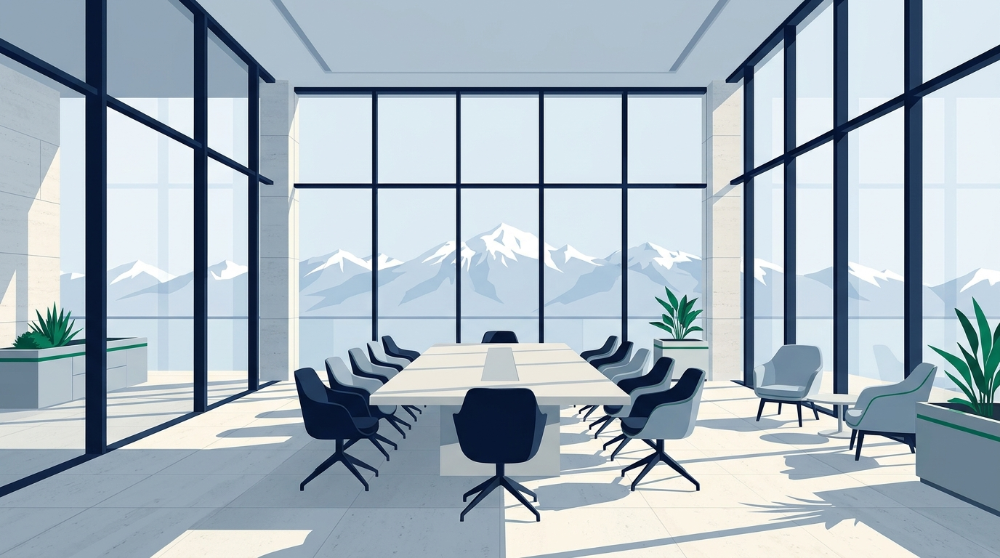
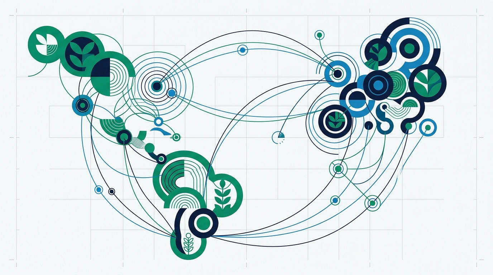
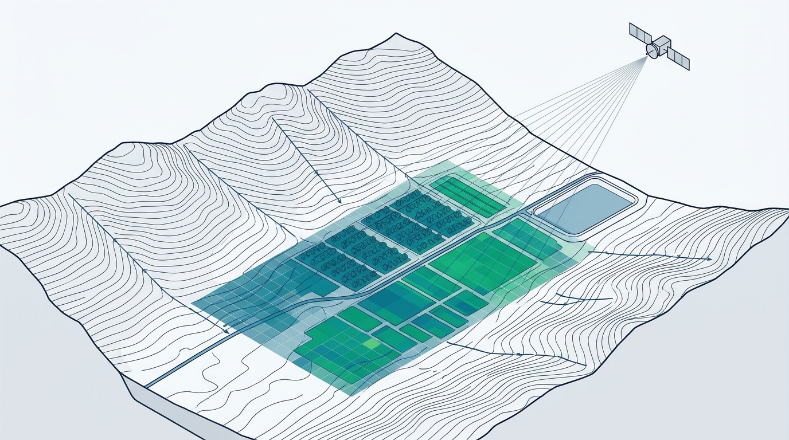
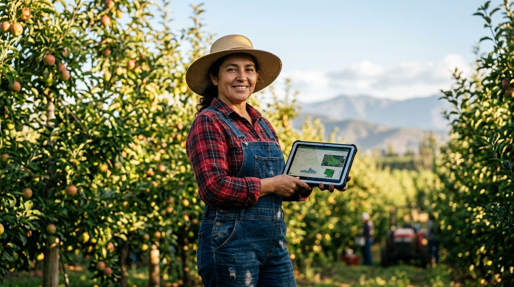

Cabina de Mando Soberana & Directorio Estratégico
Centro privado de gobernanza corporativa, financiamiento no dilutivo (CORFO / UE / US), propiedad intelectual y control del gemelo digital biofísico AgriTwin (:7777).

01 • FONDOS & CAPITALCORFO, Fondos Europeos & US VC
Crea y Valida ($220M), Eurostars/EUDR, Y Combinator, BID Lab, Cap Table y Vesting 4y/1y.

03 • CIENCIA & LIVING LABMotores Biofísicos v3.2.0 & Parral
Clausius-Clapeyron, HAND/Mulch, Piro-Vórtice WUI y telemetría en Fundo Meniel (24.8 ha).

04 • TRACCIÓN COMERCIALSoftware-First, AgroAlerta & B2B
WhatsApp 60s, escalera Feature Stacking ($15k → AgriTwin 3D) y pilotos B2B ($2M Setup).
Ruta crítica semanal de hitos internos para llegar a los deadlines reales de postulación.
- • 24 Nov (13:00 Chile): Cierre BIG 13 Ignite ($30M + $20M ext.) o foco en BIG 14.
- • Firma notarial Cesión IP (Cantuarias) + Pacto Sweat Equity SpA.
- • Lanzar AgroAlerta WhatsApp (60s) y primeros pilotos B2B pagados (Pancho/Nene).
- • 17 Dic 2026: Abre Eureka Eurostars Call 12 — buscar pyme/viña partner UE.
- • Est. Feb 2027: Deadline Y Combinator Spring 2027 (Data Room USD + métricas semanales).
- • Postulación CORFO Crea y Valida / Innova Región Maule (dossiers v3.2.0 + Meniel).
- • 4 Mar 2027 (14:00 CET): Cierre oficial Eurostars Call 12 (CORFO–UE).
- • Activar AL-INVEST Verde (EUDR), ESA BIC y créditos Cloud ($100K–$250K).
Estrategia de Financiamiento CORFO, Fondos Gringos & Cap Table
Apalancamiento estatal CORFO/FIA para I+D biofísica v3.2.0 + ruta de aceleradoras, ClimateTech VCs y grants en EE.UU.
SV
ASESOR #02
Directora de Subvenciones & Fondos Públicos
• Ex-Evaluadora Senior CORFO / Consultora BID Lab
Arquitectura CORFO (Crea y Valida, Innova Región, Semilla Expande, Start-Up Chile)
Formulación CORFO
Ver Dictamen
Directora de Subvenciones & Fondos Públicos
• Ex-Evaluadora Senior CORFO / Consultora BID LabArquitectura CORFO (Crea y Valida, Innova Región, Semilla Expande, Start-Up Chile)
Los evaluadores CORFO reprueban proyectos que suenan a "plataforma SaaS o visor GIS convencional". Debemos centrar el formulario en el Desafío Tecnológico No Resuelto de v3.2.0: modelamiento acoplado Clausius-Clapeyron + Balance Radiativo Stefan-Boltzmann/HAND + Piro-Vórtice WUI calibrado contra sensores reales en Fundo Meniel sin requerir instrumentación costosa por hectárea.
- Aporte valorizado computable: Living Lab Parral (24.8 ha, tranque 18.500 m³, fotovoltaico 2.4 kW, horas equipo técnico)
- Escalamiento secuencial: Semilla Expande / Start-Up Chile (caja comercial rápida) → Innova Región Maule → Crea y Valida I+D
- Elegibilidad SpA: RUT vigente, iniciación de actividades SII en giro tecnológico/I+D, cero morosidad previsional/tributaria
VC
ASESOR #01
Estratega VC & Cap Table (US / LatAm)
• Ex-Partner Y Combinator / AgFunder
Readiness Fondos Gringos (Delaware Flip, SAFE Post-Money, Vesting 4y/1y)
US VC Readiness
Ver Dictamen
Estratega VC & Cap Table (US / LatAm)
• Ex-Partner Y Combinator / AgFunderReadiness Fondos Gringos (Delaware Flip, SAFE Post-Money, Vesting 4y/1y)
Ningún fondo US (YC, AgFunder, S2G, Techstars) invierte directo en una SpA chilena con socios sin Vesting o con IP sin cesión firmada. Antes del primer cheque en USD debemos tener: (1) Cesión irrevocable de IP hacia la matriz, (2) Pacto con cliff/vesting estricto sin dead equity, y (3) Ruta lista para Delaware C-Corp Flip (o Cayman) manteniendo la SpA chilena como filial operativa y receptora de CORFO.
- Capital-Efficiency: Software-First AgroAlerta con CAC $18 USD y Margen Bruto 91% (sin riesgo de inventario hardware)
- Data Moat (Data Flywheel): Cada usuario WhatsApp densifica la malla H3 y el gemelo 3D sin costo de levantamiento
- Instrumento estándar: SAFE Post-Money (YC) con cap $4M–$8M USD post-tracción B2B/B2C
ESTRATEGIA CORFO
Rúbrica de Evaluación & Defensa Técnica v3.2.0
Cómo maximizar puntaje en InnovaChile y evitar rechazo por software estándar
Rúbrica de Evaluación & Defensa Técnica v3.2.0
Cómo maximizar puntaje en InnovaChile y evitar rechazo por software estándar
Demostrar incertidumbre científica resuelta por v3.2.0: acoplamiento Clausius-Clapeyron (+385 m isoterma), HAND (-2.10°C) y Piro-Vórtice WUI validado in situ.
Modelo Software-First (AgroAlerta WhatsApp 60s + Feature Stacking $15k→AgriTwin 3D) aplicable a miles de predios del Valle Central sin cuello de botella de hardware.
Aporte valorizado con Living Lab Fundo Meniel (24.8 ha, tranque 18.5k m³), equipo técnico-comercial activo y cartas de interés de viñas/APRs del Maule.
CORFO I+D
Crea y Valida (I+D+i Empresarial / Colaborativo)
Desarrollo y validación técnica-comercial de prototipo biofísico de alto riesgo
Hasta $180M–$220M CLP
70%–80% Cofin. • Llamados Q1–Q4
Crea y Valida (I+D+i Empresarial / Colaborativo)
Desarrollo y validación técnica-comercial de prototipo biofísico de alto riesgo
Hasta 24 meses. Modalidad Empresarial (individual) o Colaborativa (con universidad/centro I+D para mayor tope).
Remuneraciones I+D, subcontratos de calibración en terreno, cómputo cloud, sensores de validación en Parral y propiedad intelectual.
Acreditar aporte pecuniario + valorizado (Living Lab) y riesgo tecnológico demostrable.
CORFO REGIÓN
Innova Región (Foco Maule / Biobío)
Validación en entorno real regional para empresas con domicilio o impacto en el Maule
Hasta $60.000.000 CLP
75%–80% • Convocatorias Maule
Innova Región (Foco Maule / Biobío)
Validación en entorno real regional para empresas con domicilio o impacto en el Maule
Ideal por la base territorial en Parral / Retiro (Región del Maule). Menor competencia que las convocatorias nacionales de Santiago y evaluación alineada con crisis hídrica regional, prevención de incendios WUI y agricultura familiar/mediana.
CORFO ESCALAMIENTO
Semilla Expande & Start-Up Chile (Ignite / Growth)
Capital no dilutivo para tracción comercial, AgroAlerta WhatsApp y ventas B2B
$25M–$75M CLP
Equity-Free • BIG 13: 24 Nov 2026 / BIG 14 Abr–May
Semilla Expande & Start-Up Chile (Ignite / Growth)
Capital no dilutivo para tracción comercial, AgroAlerta WhatsApp y ventas B2B
Exige ventas iniciales mínimas (ej. primeros pilotos pagados o suscripciones AgroAlerta Pro). Financia marketing, equipo comercial y expansión nacional.
Cierre BIG 13: 24 Nov 2026 (13:00 hrs Chile) • Próxima gen. BIG 14 esperada Abr–May 2027. Hasta 90% cofinanciamiento con Female Founder Factor.
CORFO + FIA + CNR + LEY I+D
Súmate a Innovar, FIA ($100M), CNR Ley 18.450 & Ley I+D 20.241
Instrumentos complementarios con universidades, Cooperativa Las Camelias y crédito fiscal 35%
$15M–$100M + 35% I+D
Anual / Mensual • Ley I+D Abierta
Súmate a Innovar, FIA ($100M), CNR Ley 18.450 & Ley I+D 20.241
Instrumentos complementarios con universidades, Cooperativa Las Camelias y crédito fiscal 35%
Fondo ágil de entrada para validar calibraciones junto a una entidad colaboradora (INIA, U. de Talca, U. de Concepción).
Adaptación climática y transferencia territorial mediante la Cooperativa Las Camelias (14 socios en Retiro).
Bonificación estatal de 80%–90% para que clientes agrícolas financien Fase 2 (sensores KioT + automatización).
35% de crédito tributario directo contra Impuesto de Primera Categoría (certificado por CORFO) para clientes B2B.
US ACCELERATORS
Y Combinator, Techstars Farm to Fork & SOSV / IndieBio
Primer cheque institucional en EE.UU. + acceso directo a Silicon Valley y ag-corporates
$120K–$525K USD
SAFE • YC Spring: Est. Feb 2027 (W27 tardía abierta)
Y Combinator, Techstars Farm to Fork & SOSV / IndieBio
Primer cheque institucional en EE.UU. + acceso directo a Silicon Valley y ag-corporates
$125K por 7% + $375K SAFE MFN. Valora crecimiento semanal del bot AgroAlerta y Data Flywheel sin inventario. Requiere Delaware C-Corp o Cayman.
Aceleradora AgTech en Minnesota con Cargill y Ecolab. Acceso directo a pilotos con gigantes agroindustriales globales.
Fuerte en DeepTech, biofísica climática y hardware Fase 2 (sondas KioT + gemelo digital).
US CLIMATE & AG VC
AgFunder, S2G Ventures, Finistere & Elemental Excelerator
Fondos estadounidenses especialistas en AgTech, WaterTech y riesgo climático
$500K–$3.0M USD
Rolling VCs • Elemental: Cohorts Anuales
AgFunder, S2G Ventures, Finistere & Elemental Excelerator
Fondos estadounidenses especialistas en AgTech, WaterTech y riesgo climático
Fondos líderes en AgTech y teledetección agrícola. Buscan SaaS con expansión LATAM/California (cultivos espejo: almendros, cerezos, vides).
Capital catalítico climático (Elemental combina grant no dilutivo + SAFE hasta $1M USD) con foco en resiliencia hídrica e incendios WUI.
US GRANTS & CLOUD
BID Lab (IDB), Cloud Climate Credits & NSF SBIR / USDA CIG
Financiamiento no dilutivo internacional y créditos de cómputo satelital
$100K–$1.0M USD
Rolling (BID/Cloud) • SBIR Trimestral
BID Lab (IDB), Cloud Climate Credits & NSF SBIR / USDA CIG
Financiamiento no dilutivo internacional y créditos de cómputo satelital
Sede en Washington D.C. Financia innovación climática e inclusión rural en Chile (calce exacto con Cooperativa Las Camelias y APRs).
Créditos no dilutivos para procesamiento masivo de Sentinel-2, DEM y modelos físicos v3.2.0 sin quemar caja propia.
Requiere entidad constituida en EE.UU. (Delaware C-Corp) e I+D ejecutada con partner o piloto agrícola estadounidense (ej. California).
UE I+D GRANTS
Eureka / Eurostars (Puente CORFO), Horizon Europe Clúster 6 & EIC
Financiamiento no dilutivo europeo para I+D climática, agua, suelos y teledetección
€300K–€2.5M EUR
Eurostars: 4 Mar 2027 • EIC 4 Cut-Offs/Año
Eureka / Eurostars (Puente CORFO), Horizon Europe Clúster 6 & EIC
Financiamiento no dilutivo europeo para I+D climática, agua, suelos y teledetección
Puente directo sin abrir filial primero: proyecto conjunto entre AgroTech SpA (financiado vía CORFO Chile) y una pyme/viña europea (ej. España/Francia/Portugal).
Consorcios internacionales en bioeconomía, sequía, prevención de incendios WUI y agricultura regenerativa. Chile participa como socio en consorcios UE.
Grant hasta €2.5M EUR + equity opcional hasta €15M EUR para DeepTech climático. Requiere constituir filial/sede en Estado Miembro UE.
ESA / EIT / UE VC
ESA BIC / Copernicus, EIT Food & VCs AgTech Europeos (Astanor, Anterra)
Incubación espacial Copernicus + fondos europeos líderes en agricultura regenerativa
€50K–€2.5M EUR
ESA Trimestral • VCs Rolling • EIT Q1–Q3
ESA BIC / Copernicus, EIT Food & VCs AgTech Europeos (Astanor, Anterra)
Incubación espacial Copernicus + fondos europeos líderes en agricultura regenerativa
Grants equity-free para startups que explotan datos satelitales europeos (Sentinel-2 / Copernicus) y acceso a soporte técnico ESA.
Consorcio agroalimentario oficial de la UE: financiamiento no dilutivo, pilotos pagados con cooperativas europeas y acceso a compradores de vino/fruta.
VCs europeos especialistas en AgTech regenerativo y ClimateTech (Pre-Seed/Seed €500K–€2.5M EUR).
EUDR & UE–CHILE
AL-INVEST Verde (EUDR 2023/1115), Euroclima & ENISA España
Subvenciones UE en LATAM para trazabilidad cero deforestación y soft-landing ibérico
€100K–€300K EUR
Llamados por Lote • ENISA Abierta
AL-INVEST Verde (EUDR 2023/1115), Euroclima & ENISA España
Subvenciones UE en LATAM para trazabilidad cero deforestación y soft-landing ibérico
Programa de la Comisión Europea para América Latina enfocado en cumplimiento EUDR 2023/1115 y cooperativas agrícolas (calce directo con Pasaporte Verde EUDR + Las Camelias).
Iniciativas UE–Chile de adaptación hídrica, energías limpias rurales y prevención de incendios forestales.
Préstamos participativos públicos sin avales personales ni dilución inicial para entrar al mercado vitivinícola y frutícola ibérico.
CT
Cap Table & Ledger de Vesting (Chile AgroTech SpA — Escenario Modelado)
Escenario Pre-Constitución: RUT, porcentajes accionarios y contratos en borrador son referenciales.
Modelado • Vesting 4y / 1y Cliff
Cap Table & Ledger de Vesting (Chile AgroTech SpA — Escenario Modelado)
Escenario Pre-Constitución: RUT, porcentajes accionarios y contratos en borrador son referenciales.
| SOCIO / TITULAR | ROL EN HOLDING | EQUITY INICIAL | RÉGIMEN DE VESTING | PROTECCIÓN IP |
|---|---|---|---|---|
| Daniel Santander | Fundador & Arquitecto de Software | 40.0% | Fundador (Sin dilución pre-seed) | Veto Exclusivo en Cesión de IP |
| Socios Operativos (Sweat Equity) | Pancho, Nene, Rudi, Cantuarias, Lápiz, Daniela | Sweat Equity | Vesting 24-36m / Cliff 6m | Pacto Accionistas SpA |
| Pool de Opciones (ESOP) | Talento Clave (Tech & Agronomía) | 10.0% | 4 años / 1 año cliff | Contratos de Cesión Obligatorios |
| Inversionistas Pre-Seed / VC | Capital Expansión Comercial | 10.0% - 15.0% | SAFE Post-Money | Valuación $1.8M - $2.5M USD |
Gobernanza Corporativa & Blindaje de Propiedad Intelectual
Contratos de cesión de IP, pacto de socios SpA, Cooperativa Las Camelias y alianzas gremiales (SNA / Fedefruta).
IP
ASESOR #03
General Counsel Tech & IP
• Socio Senior Tech Chile / Especialista Ley 17.336
Contrato de Cesión de IP (Front-End & Shaders Three.js)
Firma Notarial Crítica
Ver Dictamen
General Counsel Tech & IP
• Socio Senior Tech Chile / Especialista Ley 17.336Contrato de Cesión de IP (Front-End & Shaders Three.js)
Si Cantuarias u otros colaboradores comitean código o diseñan interfaces sin haber firmado previamente la Cesión de Propiedad Intelectual con firma electrónica avanzada o ante notario, retienen la titularidad de los derechos patrimoniales de autor. Inversionistas o CORFO exigirán este documento firmado antes de transferir fondos.
- Régimen Legal: Art. 16 y sgtes. Ley 17.336 de Propiedad Intelectual
- Contratos Civiles: Rudi Kaatz y Luis González (Lápiz) en Parral
- Cláusula de Secreto Comercial y No Concurrencia de 24 meses
- Titularidad: IP matriz pertenece a Daniel Santander; SpA tiene licencia exclusiva de explotación
PR
ASESOR #04
Director de Asuntos Corporativos & PR
• Ex-Gerente de Comunicaciones SNA / Silvoagropecuario
Acuerdo Marco Gremios (SNA / Fedefruta) & Prensa Económica
Alianzas de Cuenca
Ver Dictamen
Director de Asuntos Corporativos & PR
• Ex-Gerente de Comunicaciones SNA / SilvoagropecuarioAcuerdo Marco Gremios (SNA / Fedefruta) & Prensa Económica
El agro chileno es un ecosistema conservador y desconfiado de la tecnología foránea. Si llegas con discurso de 'Silicon Valley', te cerrarán la puerta. El mensaje debe hablar en el lenguaje del agricultor: 'seguridad de riego en enero', 'menos gasto en diesel de bombeo' y 'defensa ante la DGA'.
- Alianza con Junta de Vigilancia del Río Longaví (JVRL) para telemetría de caudales
- Apalancamiento de redes de familias agrícolas medianas de Maule (red Catalina Espinoza)
- Apariciones en Revista del Campo (El Mercurio) y Diario Financiero
- Presentación en Congreso Frutícola Fedefruta / Enagro SNA
SpA
Estructura Societaria SpA & Acoplamiento con Cooperativa Las Camelias
Pacto de accionistas, titularidad de IP y vinculación territorial.
Estructura Societaria SpA & Acoplamiento con Cooperativa Las Camelias
Pacto de accionistas, titularidad de IP y vinculación territorial.
Arquitecto de Software & Diseñador de Sistemas. Titularidad exclusiva de derechos de autor AgriTwin y derecho a veto en transferencia de IP.
Francisco Ipinza ("Pancho"), Wladimir Gutiérrez ("Nene") y Rüdiger Kaatz ("Rudi") en conector operativo & Living Lab Parral.
Motor Biofísico, Teledetección GIS & Living Lab Parral
Algoritmos acoplados de balance hídrico FAO-56 dual, Clausius-Clapeyron / HAND / Piro-Vórtice WUI y telemetría off-grid del Fundo Meniel (24.8 ha).
GIS
ASESOR #05
Directora de Teledetección & Validación GIS
• Ex-Científica Senior Copernicus / Planet Labs
Pipeline Multiespectral Sentinel-2 & DEM ALOS PALSAR 12.5m
Calibrado Maule
Ver Dictamen
Directora de Teledetección & Validación GIS
• Ex-Científica Senior Copernicus / Planet LabsPipeline Multiespectral Sentinel-2 & DEM ALOS PALSAR 12.5m
Jamás vendas tus capas satelitales como 'planimetría legal de deslindes'. El DEM de 12.5m y Sentinel de 10m son herramientas de análisis agronómico y territorial, no de mensura pericial. Todo informe B2C o B2B debe llevar la cláusula de descargo de responsabilidad cartográfica.
- Frecuencia temporal: 5 días de revisita con constelación Sentinel-2A / Sentinel-2B
- Resolución espacial: 10m en bandas visibles y NIR; 20m en Red-Edge y SWIR
- Topografía de alta resolución: ALOS PALSAR DEM 12.5m para sombras orográficas y pendiente
- Índices biofísicos: NDVI (vigor), NDRE (clorofila), NDWI (estrés de canopia)
AGR
ASESOR #06
Director Agronómico de Precisión & Fisiología Frutal
• Investigador Senior INIA / UC Davis Chile
Matriz Biofísica FAO-56 Dual & Alerta de Heladas Radiativas
Validación Living Lab
Ver Dictamen
Director Agronómico de Precisión & Fisiología Frutal
• Investigador Senior INIA / UC Davis ChileMatriz Biofísica FAO-56 Dual & Alerta de Heladas Radiativas
Los administradores de campo no creen en satélites si no los correlacionas con lo que ellos ven en su calicata. Nuestro modelo debe calibrarse con la textura de suelo real de Parral (franco-arcilloso) para que el balance FAO-56 no sobreestime la capacidad de retención de humedad.
- Ahorro cuantificado: 18% a 24% de volumen de agua respecto a calendario fijo de riego
- Optimización de bombeo en tarifa valle eléctrica (23:00 - 08:00 hrs): ahorro hasta 35% kWh
- Curva de susceptibilidad fenológica a heladas críticas (-1.5°C en caída de pétalos)
- Protocolo de correlación con calicatas y sensores de suelo de Parral
LAB
Living Lab Demostrador: Fundo Meniel (Las Camelias, Retiro)
Infraestructura agroecológica off-grid y telemetría de cuenca.
Rol SII 142-88
Living Lab Demostrador: Fundo Meniel (Las Camelias, Retiro)
Infraestructura agroecológica off-grid y telemetría de cuenca.
Motor Comercial, Pipeline B2B & Caja Inmediata B2C
Setup Fee de $1.5M - $2.5M CLP para pilotos pagados y venta digital express de informes de parcelas a $29.990 CLP vía WhatsApp.
B2B
ASESOR #07
VP Comercial B2B Agroindustrial
• Ex-Director Comercial Climate FieldView / Trimble Ag
Playbook de Ventas B2B & Contrato Piloto Pagado 60 Días
Pipeline Activo
Ver Dictamen
VP Comercial B2B Agroindustrial
• Ex-Director Comercial Climate FieldView / Trimble AgPlaybook de Ventas B2B & Contrato Piloto Pagado 60 Días
Prohibido hacer pilotos gratuitos de más de 14 días. Las agrícolas medianas usan los pilotos gratis para sacar mapas durante la cosecha y luego no pagan. El Setup Fee de $1.5M - $2.5M CLP es el filtro definitivo para saber si el gerente agrícola tiene presupuesto real.
- Segmento objetivo: Agrícolas de 50 a 300 ha (cerezos, arándanos, viñedos Maule/Ñuble)
- Estructura comercial: Setup Fee de calibración + suscripción mensual por hectárea
- Comisiones de venta: 15% sobre Setup Fee + 5% sobre contratos anuales cobrados
- Objeción principal: 'Ya tengo fotos de drones' -> Contraargumento: frecuencia semanal automática
B2C
ASESOR #08
Head of Growth B2C & PropTech
• Ex-Growth Lead Marketplaces Inmobiliarios
Embudo Digital de $0 Inventario (Informes Parcelas $29.990 CLP)
Caja Inmediata
Ver Dictamen
Head of Growth B2C & PropTech
• Ex-Growth Lead Marketplaces InmobiliariosEmbudo Digital de $0 Inventario (Informes Parcelas $29.990 CLP)
Este producto B2C es nuestro salvavidas de flujo de caja inmediato para financiar el runway mientras maduran las ventas B2B. Pero debemos automatizar el WhatsApp con un guión impecable; si el comprador espera más de 30 minutos la respuesta, la tasa de conversión cae un 70%.
- Precio unitario: $29.990 CLP por informe express (entrega PDF en 2 horas)
- Costo de Adquisición (CAC) estimado: $4.200 - $6.500 CLP vía Meta Ads segmentado
- Margen bruto: >85% (costo de cómputo satelital y generación de PDF marginal)
- Up-sell: Visita técnica en terreno coordinada con Rudi Kaatz en Parral
PL
Pipeline de Ventas B2B & Métricas del Embudo B2C
Foco de prospección: Agrícolas medianas y compradores de parcelas de agrado.
Pipeline de Ventas B2B & Métricas del Embudo B2C
Foco de prospección: Agrícolas medianas y compradores de parcelas de agrado.
AgroAlerta Pocket Bot en WhatsApp (onboarding 60s vía GPS/Rol + Cultivo) con cero riesgo de inventario de hardware (KioT pasa a Fase 2 como upgrade in-situ). -85% CAC vs. venta en frío.
Fuerza comercial (Pancho & Nene) en agrícolas de Maule/Ñuble + embudo digital Meta Ads → WhatsApp para informes de parcelas.
Radar de Infraestructura & Salud en Tiempo Real
Ping automático a cada servicio del ecosistema (:7770 HQ • :7777 AgriTwin • :7771..:7774). Detección en 1.5s.
Puertas de Enlace de la Suite (One-Click Launch)
Directorio Ejecutivo Virtual & Advisory War Room
Mesa ovalada con 10 Asesores de élite con sus productos desplegados en mesa (Comités de Capital, Legal, Ciencia, Comercial y Marca/Diseño).
Perspectiva cinemática sobre la mesa directiva y ventanales con vista a la Cordillera de los Andes.
La Gran Pantalla del Directorio (Estado Integral de la Compañía)
Sincronización en tiempo real • 4 Cuadrantes CanónicosQ1: Pipeline Satelital & Motor Biofísico
Sentinel-2 • DEM 12.5m • DGA • AGROMET- Índices Clave (NDVI, NDRE, NDWI): L2A Fondo Atmósfera Calibrado
- Topografía & Máscara de Nubes SCL: ALOS PALSAR 12.5m DEM
- Estación DGA Longaví & AGROMET: 4.82 m³/s • Temp: 14.8°C
- Latencia OGC STAC/COG API (:7777): 42 ms (Óptimo)
Q2: Red Territorial Living Lab Parral
Fundo Meniel • Rudi Kaatz & Lápiz- Infraestructura Off-Grid & Baterías: Recicladas • 88% SoC (2.4 kW Solar)
- Tranque Meniel (24.8 ha, Rol 142-88): 18.500 m³ (78% Capacidad)
- Red de 5 APRs (Longaví / Retiro): Monitoreo Acuífero y Pozos
- Kits de Campo & Ensamblaje B2C: Rudi Kaatz en Despacho
Q3: Capital, Subvenciones & Cap Table
CORFO • FIA • ANID • Vesting Sanity- CORFO Crea y Valida I+D: $220M CLP (Fase Técnica)
- Semilla Expande & FIA Innovación: $45M CLP (Convocatoria)
- Pacto Socios & Vesting Cantuarias: 4y / 1y Cliff (Requiere Firma)
- Runway Modo $0 Inventario: 14 Meses Proyectados
Q4: Tracción Comercial & Embudo B2B/B2C
PropTech $0 Inventario + Pilotos Viñas- B2C Informes de Parcelas ($0 Inv.): Ticket $29.990 CLP (Meta Ads)
- Costo Adquisición Cliente (CAC): $4.500 CLP (Margen >80%)
- Prospección B2B (Pancho & Nene): 3 Viñas en Calificación (Curicó)
- Setup Fee Piloto Pagado (60 días): $2.0M CLP por Agrícola
Radar de Reclutamiento Estratégico & Alianzas Clave
Pipeline de IncorporaciónGobernanza AgroTech SpA & Matriz de Socios
Estructura de participación societaria mixta: inversión de capital, horas de desarrollo y derechos de autoría.
Daniel Santander
Co-FundadorLiderazgo Tecnológico & Modelos Biofísicos
Pancho, Nene & Rudi Kaatz
Socios OperativosOperación Maule Sur & Parral
Reglas del Sistema Mixto (Trabajo por Equity / Usufructo)
Cada sprint, desarrollo algorítmico o gestión territorial se registra formalmente como aporte de valor no salarial.
La SpA tiene la exclusividad comercial para comercializar los productos B2B mientras el autor retiene la autoría técnica.
Al cerrar contratos comerciales o subsidios CORFO/CNR, se asignan dividendos o se inicia régimen salarial fijo pactado.
Cooperativa de Trabajo AgroTech Las Camelias
Estructura asociativa comunitaria: agricultores, regantes y operadores unidos para compartir maquinaria y beneficios de escala.
¿Cómo se acopla la SpA con la Cooperativa?
La SpA es el núcleo tecnológico privado que desarrolla, licencia y opera los gemelos digitales (AgriTwin 1 y AgroTwin 2) y diseña los algoritmos. La Cooperativa de Trabajo es el vehículo territorial: congrega a los parceleros vecinos para postular juntos a subsidios estatales, compartir compras por volumen y ejecutar faenas de subsolado Keyline y zanjas de infiltración sin endeudarse individualmente.
Ejes de Acción & Operación Regenerativa Territorial
La Cooperativa Las Camelias integra la gestión asociativa campesina con tecnología de precisión.
Articulación de huertos asociativos, conservación de material genético adaptado a la sequía y ferias de intercambio.
Capacitación en bioinsumos para vecinos, reduciendo hasta un 70% los costos de fertilizantes químicos en el valle.
Uso colaborativo del arado Yeomans para descompactación de praderas y zanjas de infiltración sin endeudamiento individual.
Consola de Agentes Autónomos (Workforce Orchestrator)
Estado de los chats/agentes especializados para delegar tareas sin sobrecargar el contexto.
Foco: Landing de ventas, sección Somos, tienda de hardware y funnel comercial.
src/, src/components/
Foco: Three.js 3D predial, Taller AoE II, FAO-56 y Vista Vecinal Catan/Civ VI.
agritwin/, agritwin/vecinos_catan.html
Foco: Cartografía ESRI World Imagery, Las Camelias (Retiro), FWI, TWI y Dossier Directorio.
agritwin-regional/
Foco: Backend Python, ingesta LoRaWAN, procesamiento de bandas Sentinel-2 y webhooks.
rewild/
Radiografía del Ecosistema AgroTech
Holding tecnológico-agroecológico estructurado en 5 capas complementarias e interoperables.
Topología de Datos & Capas del Holding
Interoperabilidad Multi-Puerto
flowchart TD
classDef hq fill:#0f172a,stroke:#10b981,stroke-width:1.5px,color:#fff;
classDef web fill:#0f172a,stroke:#3b82f6,stroke-width:1.5px,color:#fff;
classDef twin1 fill:#0f172a,stroke:#f59e0b,stroke-width:1.5px,color:#fff;
classDef twin2 fill:#0f172a,stroke:#06b6d4,stroke-width:1.5px,color:#fff;
classDef rewild fill:#0f172a,stroke:#8b5cf6,stroke-width:1.5px,color:#fff;
HQ[" AgroTech HQ (:7770)
• Gobernanza SpA & Cooperativa
• Obsidian Vault Integrado
• Orquestador de Agentes"]:::hq
WEB[" AgroTech Web (:7771)
• Marketplace B2B & Tienda LoRaWAN
• Captación de Clientes & Membresías"]:::web
TWIN2[" AgroTwin 2 Territorial (:7774)
• Mapeador Local B2B Institucional
• 10 Predios Roles SII & Derechos DGA
• 5 Pozos APR & Inundación Longaví
• API Boundary Conditions (:7774)"]:::twin2
TWIN1[" AgriTwin 1 Predial (:7773)
• Fundo Meniel (24.8 ha) Three.js PBR
• Operativo: Riego, Keyline & PRV
• Ingesta en vivo vía /api/basin-sync"]:::twin1
REWILD[" RewildMapper & Backend (:7772)
• Bio-corredores & Restauración
• Pipeline Sentinel-2 L2A & NDVI
• Ingesta LoRaWAN & Webhooks"]:::rewild
HQ --> WEB
HQ --> TWIN1
HQ --> TWIN2
HQ --> REWILD
TWIN2 == "Condiciones de Borde (/api/basin-sync)" ==> TWIN1
TWIN1 -- "Telemetría Nodos KioT Mesh" --> TWIN2
REWILD -- "Capas NDVI & Bio-corredores" --> TWIN2
Fachada comercial, onboarding de agricultores, venta de kits KioT LoRaWAN y postulaciones colectivas a fondos CNR / CORFO.
Gemelo digital operativo de Fundo Meniel (24.8 ha). Simulación 3D en Three.js con relieve PBR, Taller Agrícola estilo AoE II, Ganadería PRV y acople a telemetría regional por /api/basin-sync.
Terminal GIS Institucional & B2B (122.000 ha). Mapeador Local & APRs con 10 Roles SII, pozos profundos, cotas de inundación DGA/SENAPRED, FWI y generador de condiciones de borde.
Motor analítico y de bio-corredores: ingesta de telemetría LoRaWAN, procesamiento de imágenes Sentinel-2 L2A y cálculo de integridad ecológica.
Cabina de control privada del fundador. Lector nativo del Vault de Obsidian, gobernanza SpA, cooperativa comunitaria y telemetría de microservicios.
Hardware KioT en terreno (sondas capacitivas, piezómetros, LoRaWAN) junto con diseño permacultural regenerativo en Living Lab Parral.
Arquitectura del Embudo Táctico: Acople AgroTwin 2 (:7774) ↔ AgriTwin 1 (:7773)
Estrategia híbrida: Mapeador Local B2B Institucional y Alimentador de Condiciones de Borde para Fundo MenielSe consumen vía API pública abierta sin costos de supercómputo.
10 Roles SII, 5 APRs, cuenca Longaví y API de condiciones de borde.
Three.js interactivo; toma decisiones de riego, aspersión y pastoreo PRV.
const regionalReq = http.get('http://127.0.0.1:7774/api/telemetry/summary', { timeout: 1200 }, (regRes) => {
let data = '';
regRes.on('data', chunk => data += chunk);
regRes.on('end', () => {
const regJson = JSON.parse(data);
res.end(JSON.stringify({ source: 'regional-live-7774', fundoMeniel, regionalCuenca: regJson }));
});
});KioT Hardware & Automatización Edge
Infraestructura Sensórica de Bajo Consumo & Alta Resiliencia
- • Sondas FDR Tri-Estrato: Medición capacitiva continua en 3 horizontes (0-20 cm activa, 20-60 cm bulbo, 60-100 cm estrato profundo).
- • Actuadores Solares LoRaWAN: Control autónomo de válvulas motorizadas para riego por pulsos según déficit hídrico FAO-56.
- • Piezometría de Tranque: Medición ultrasónica de cota de agua (18.500 m³ en Fundo Meniel) con alerta ante vaciado crítico.
Permacultura & Living Lab Regenerativo
Pedagogía Campesina, Saberes Vivos & Diseño Regenerativo
- • Diseño Regenerativo con Julio Pérez: Zonificación permacultural por Keyline, siembra de agua de lluvia y cortavientos protectores.
- • Economía de los Hombros: Recuperación de la minga y el apoyo mutuo comunal. Maquinaria pesada compartida en la cuenca.
- • Juego de Cartas "Raíces y Chips": Metodología lúdica de alfabetización agroecológica para agricultores y escuelas rurales.
Protocolo de Integración Cruzada de Datos (AgriTwin 1 ⇄ AgroTwin 2 ⇄ RewildMapper)
Los datos in situ de Fundo Meniel (VWC %, nivel de tranque) suben a AgroTwin 2 para calibrar el mapa satelital como Ground-Truth Anchor.
AgroTwin 2 alerta a AgriTwin 1 con 6 horas de anticipación ante la llegada de viento Puelche desecante o riesgo de helada por drenaje catabático.
RewildMapper procesa los mosaicos Sentinel-2 L2A y entrega las capas de NDVI y corredores biológicos precalculadas a ambos gemelos digitales.
Obsidian Knowledge Vault • "Agro Tech"
Sincronizado con: /Documents/Agrotech/Agro Tech/
Selecciona una nota
Centro de Documentación & Informes Maestros
Dossier CompilerFederación de telemetría multi-puerto (:7772, :7773, :7774) inyectada en plantillas canónicas de Obsidian.
Catálogo de Informes Canónicos
Selecciona una plantilla para previsualizar y compilarDossier Inversión & Gobernanza SpA
Balance financiero, CAPEX $48.5M, TIR 18.6%, Payback 3.8a, pacto de socios y Cooperativa Las Camelias.
Carpeta Técnica Riego CNR Ley 18.450
Memoria de tranque gravitacional 18.500 m³, subsolado Keyline Yeomans y ahorro de bombeo fósil (-$8.2M/año).
Pasaporte Verde & Certificado EUDR
Línea base satelital a dic-2020 para exportación de fruta sin deforestación a la Unión Europea.
Auditoría Agronómica Predial In Situ
Diagnóstico de sondas FDR tri-estrato, alerta Puelche 30-30-30, zonificación de heladas a 05:30 AM y rotación PRV.
Dossier de Inversión & Gobernanza SpA
Compilador Listo
Haz clic en " Compilar Dossier Maestro" para inyectar la telemetría viva de todos los satélites.
0x8f2d4a19c6e